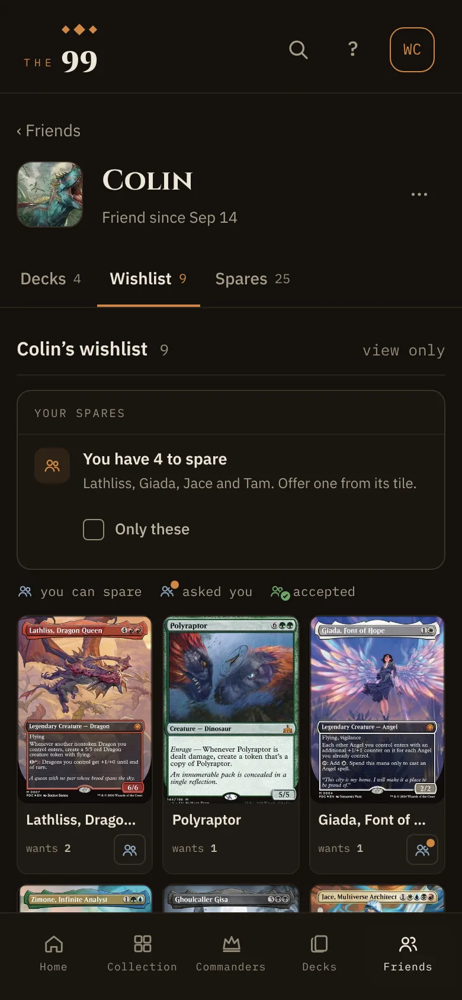
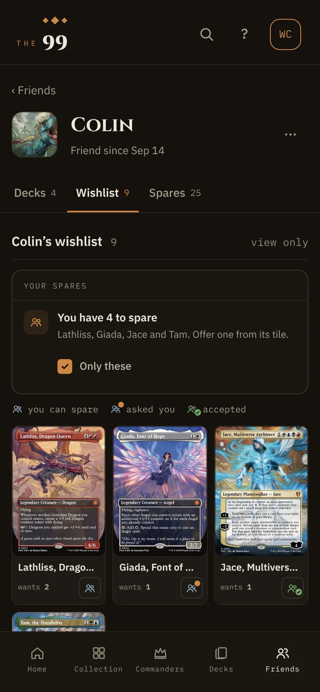
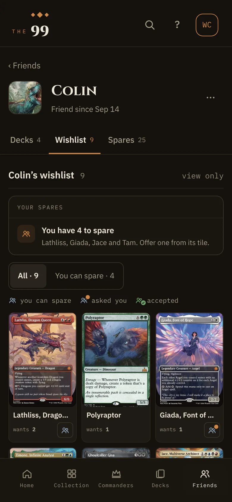
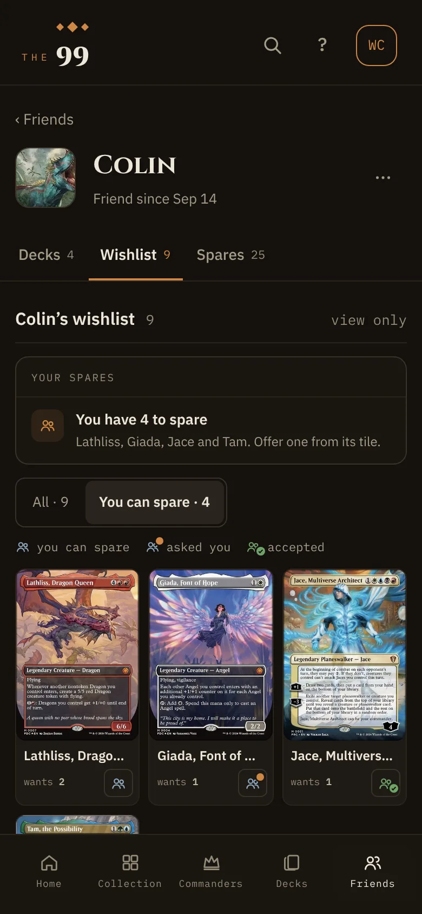
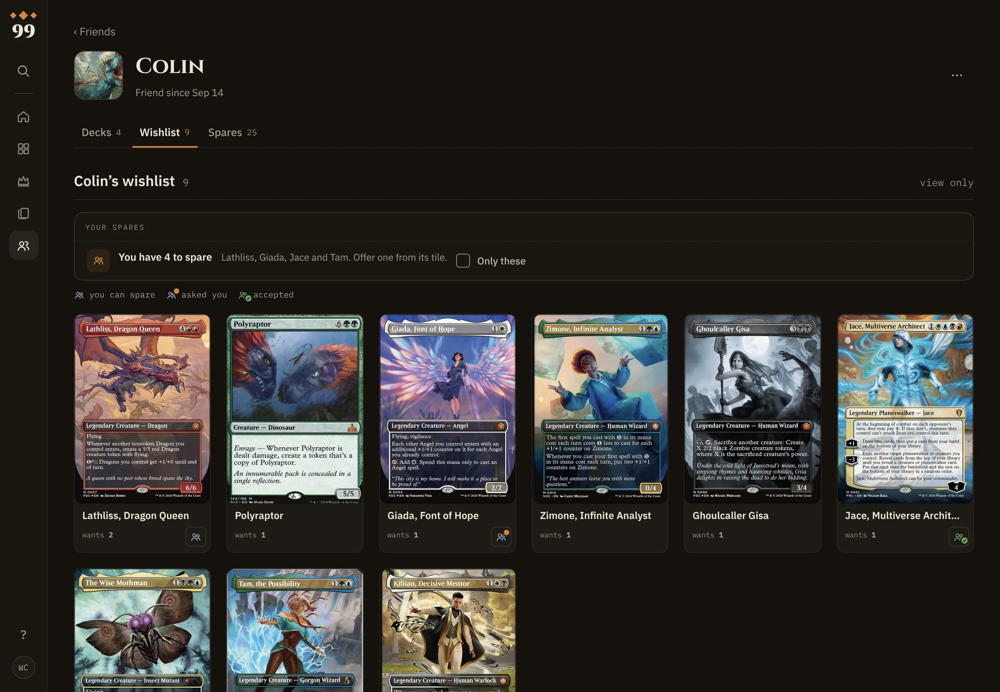
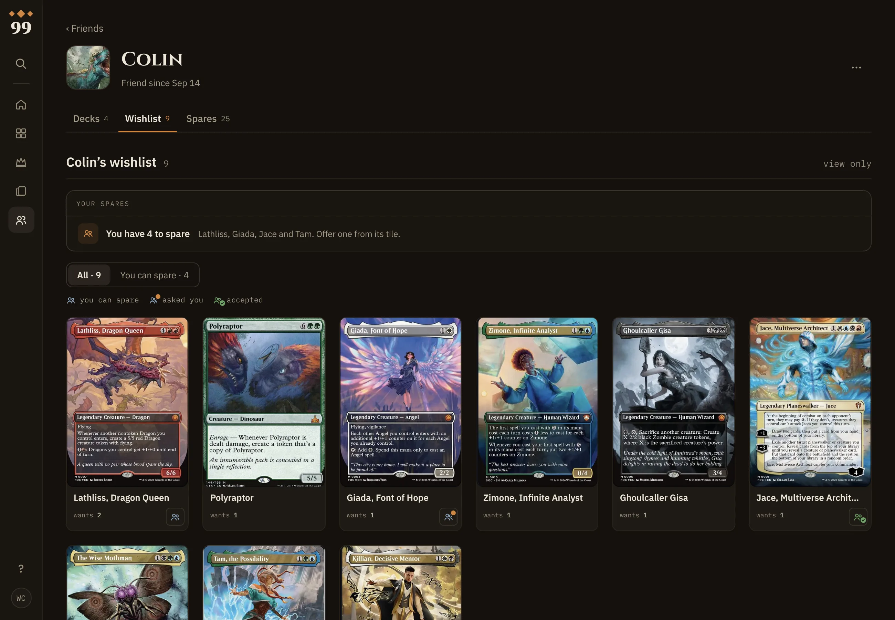
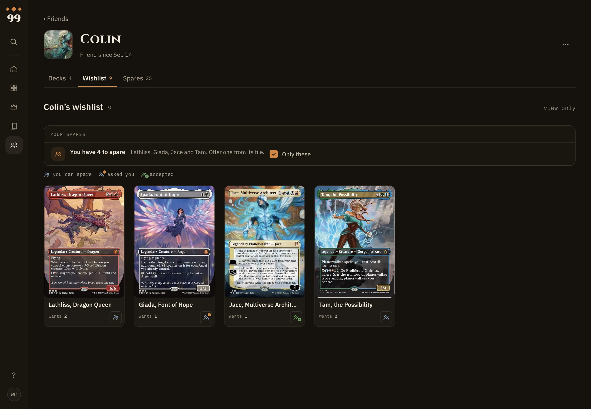
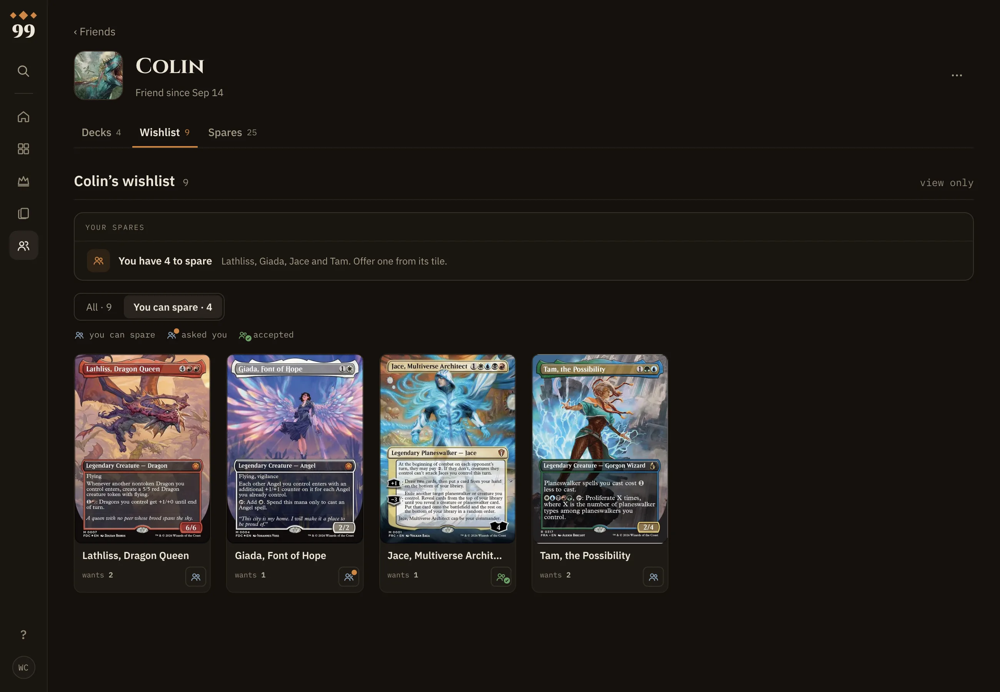

Both do one thing: narrow Colin's wishlist to the four you can spare. A keeps the control beside the text it answers; B makes it the list's own filter and leaves the call-out a plain statement.

A · Off
Only these, under the names.

A · On
The grid holds the four.

B · All
All · 9 chosen.

B · You can spare
You can spare · 4 chosen.

A · Off
The checkbox on the text's line, right after the names.

B · All
The switch under the call-out, on the left.

A · On

B · You can spare